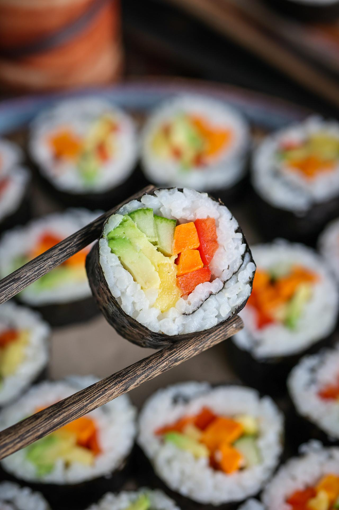

Vegetarian Sushi Rolls

Description
Vegetarian sushi rolls are a fresh and healthy alternative to traditional sushi, packed with crisp vegetables and sticky rice wrapped in seaweed.
These rolls are colorful, light, and customizable, perfect as appetizers, snacks, or light meals.
Ingredients
- 2 cups sushi rice
- 2½ cups water
- 2 tablespoons rice vinegar
- 1 tablespoon sugar
- 1 teaspoon salt
- 4 sheets nori (seaweed)
- 1 cucumber, julienned
- 1 carrot, julienned
- 1 avocado, sliced
- Soy sauce, pickled ginger, and wasabi for serving
- Bamboo sushi mat (optional)
Steps
- Rinse sushi rice under cold water until clear, then cook with water as per package instructions.
- Mix cooked rice with rice vinegar, sugar, and salt. Let it cool slightly.
- Place a sheet of nori on the bamboo mat or flat surface.
- Spread a thin layer of rice on the nori, leaving a 1-inch border at the top.
- Arrange vegetables (cucumber, carrot, avocado) across the center of the rice.
- Roll the sushi tightly using the mat or hands, sealing with a bit of water.
- Slice into bite-sized pieces using a sharp, wet knife.
- Serve with soy sauce, pickled ginger, and wasabi.
Home